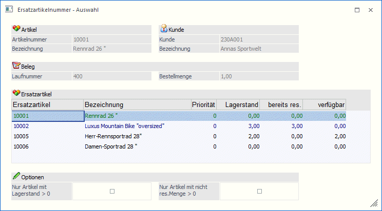

Im Menüpunkt…
1 Erfassen
1 Kundenbestellungen
1 Kundenbestellungen bearbeiten
… können die Artikel in der Sperrliste ersetzt werden.
D.h. wenn Artikel in der Sperrliste steht kann er in der Tabelle durch Drücken des Ersatzartikel-Buttons durch einen der hinterlegten Ersatzartikel ersetzt werden.
Hinweis
Es gelten die gleichen Einschränkungen wie beim Belege erfassen.
Damit die Änderungen wirksam werden, muss nach dem Ersetzen die Sperrtabelle mit dem OK-Button gespeichert werden.
Ohne Speichern kann die ursprüngliche Aufteilung der Liefermengen mit dem Anzeige-Button wiederhergestellt werden.
Im Auswahlfenster werden für den ausgewählten Artikel die Belegnummer und die Bestellmenge angezeigt. In der Tabelle werden neben dem Lagerstand auch der um die reservierte Menge reduzierte Lagerstand (= verfügbare Menge) angezeigt.

Im Auswahlfenster kann die Anzeige mit Hilfe der Checkbox " Nur Artikel mit Lagerstand > 0" oder "Nur Artikel mit nicht res. Menge > 0" eingeschränkt werden.